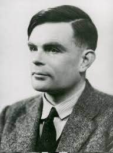

Alan Turing
About the Pioneer
Alan Turing (1912–1954) was an English mathematician, computer scientist, and cryptanalyst. He introduced foundational concepts of modern computing and artificial intelligence through the theoretical Turing Machine.
His work during World War II helped the Allies understand encrypted German messages. His ideas continue to influence computer science and artificial intelligence today.

Important Life Events
- Born in London in 1912.
- Graduated from King's College, Cambridge in 1934.
- Cracked Enigma machine ciphers at Bletchley Park during WWII.
- Formulated the Turing Test for Artificial Intelligence in 1950.
Key Contributions
- The Universal Turing Machine concept
- ACE (Automatic Computing Engine) Architecture
- Foundational papers on Morphogenesis and AI
Additional Resources: The Alan Turing Institute
Learn more on Wikipedia